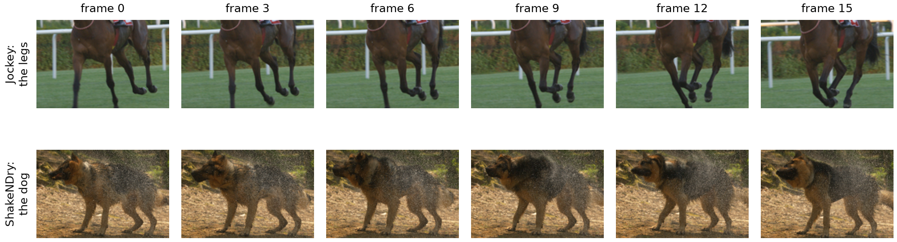
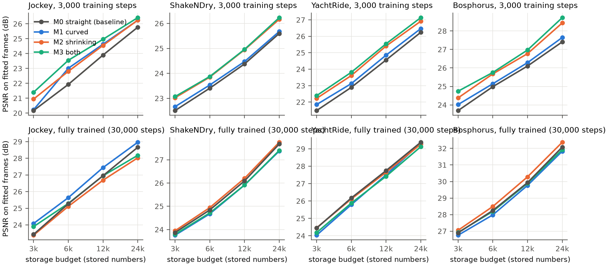
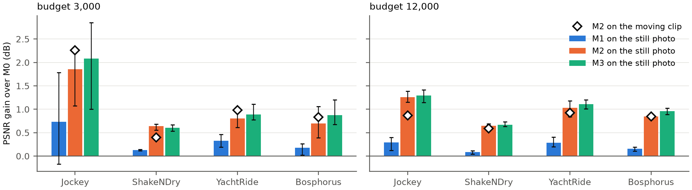
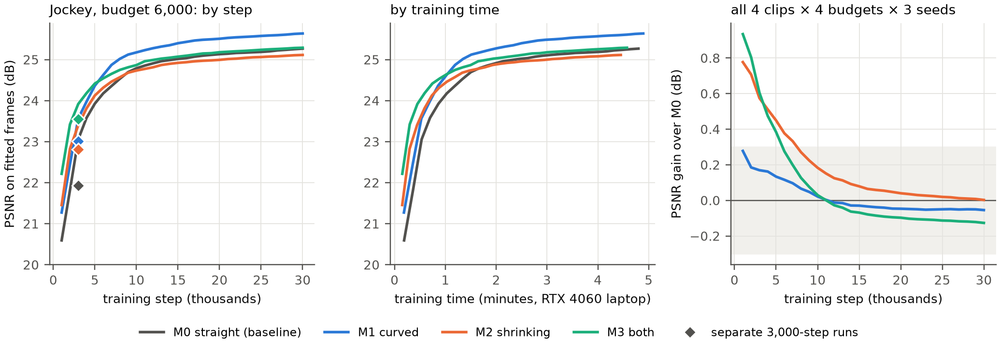
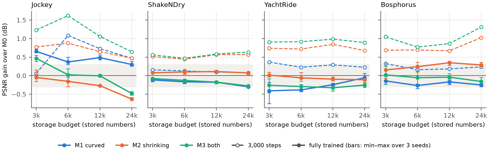
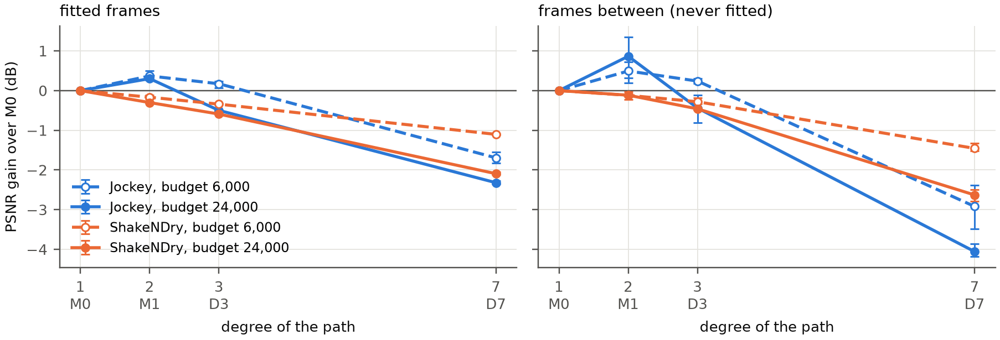
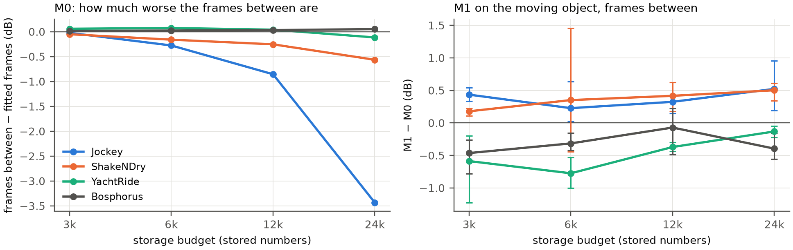
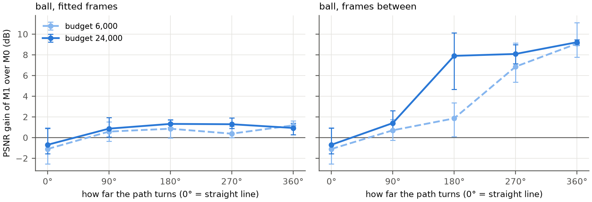
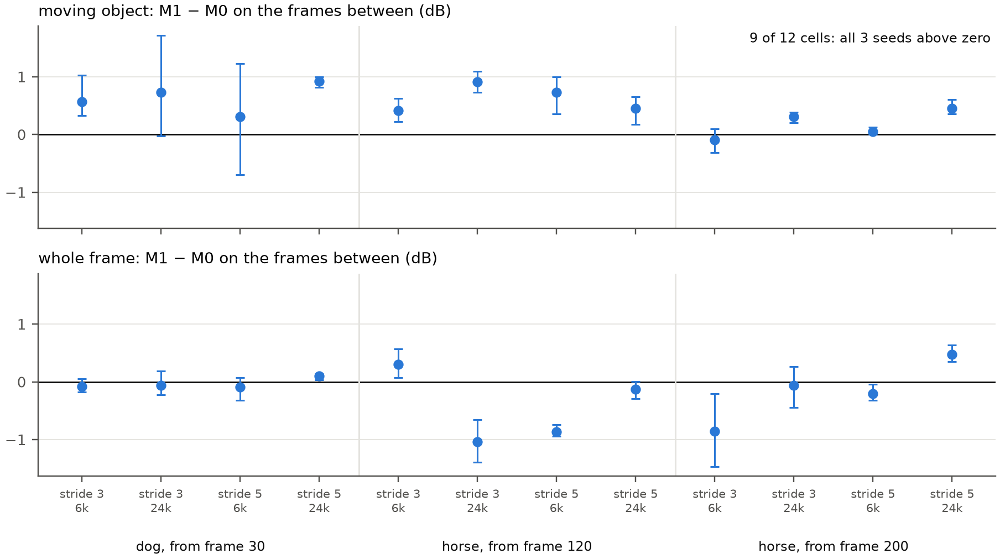
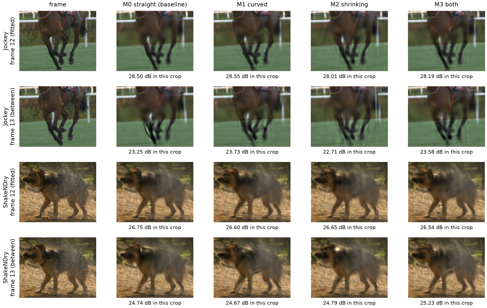

Is Folding Worth the Storage?
Curved and Shrinking Space-Time Gaussians for Video
1Background
1.1 Video Representation via Space-Time Gaussians (Unit 16)
In Unit 16, a short video sequence is represented as a summation of continuous, colored 3D Gaussians spanning both spatial and temporal domains. Each space-time Gaussian - defined over spatial coordinates (x, y) and time t - is characterized by its center position, spatial footprint, color, and temporal duration.
A space-time Gaussian exhibits transient visibility: its amplitude peaks at time t0 and decays smoothly before and after. Throughout its lifespan, the Gaussian undergoes linear translation at a constant velocity v while maintaining a fixed spatial covariance. To render a video frame at time t, each Gaussian is evaluated at that timestamp to yield a 2D spatial slice, defined by its instantaneous position and attenuated opacity. The final frame is synthesized by blending these 2D slices. This process is illustrated for a single Gaussian in the figure below. Fitting a video model thus entails optimizing the parameters of all Gaussians via gradient descent to minimize the discrepancy between the synthesized frames and the ground truth.
Under this formulation, storing a video requires persisting the parameters of every constituent Gaussian. In Unit 16, each Gaussian is parameterized by 12 values (Table 1), incurring a fixed storage overhead of 12 parameters regardless of its temporal span. Consequently, the total storage capacity scales directly with the number of Gaussians.
| Centre (x, y) | Peak time t0 | How long it is visible (σt) | Velocity v | Shape | Colour (red, green, blue) | Total |
|---|---|---|---|---|---|---|
| 2 | 1 | 1 | 2 | 3 | 3 | 12 |
1.2 Non-Linear Motion Dynamics
Real-world videos frequently exhibit complex non-linear motions that cannot be accurately captured by constant velocity assumptions. For instance, a galloping horse rapidly swings its legs back and forth across a few frames, while a dog shaking off water alternates its head and body rotation (Figure 1). Because linear Gaussians can only approximate such trajectories over extremely brief intervals, baseline methods are forced to partition complex trajectories, relying on a sequence of short-lived Gaussians to cover a single continuous motion.

1.3 VeGaS: Folded-Gaussians Representation
To address the limitations of linear motion models, VeGaS (Smolak-Dyżewska et al., 2024) extends space-time Gaussians through a novel formulation termed Folded-Gaussians, introducing two key modifications. First, the trajectory of the 2D slice's center is modeled using a higher-order polynomial function of time (typically 7th-degree by default) rather than a linear trajectory, allowing a single Gaussian to traverse a non-linear path. Second, spatial extent is dynamic, as the 2D slice is scaled by its temporal weight, causing the Gaussian to contract as its opacity fades. VeGaS achieves superior reconstruction quality (measured in PSNR) compared to prior video representations, with a primary application toward photorealistic video editing.
1.4 Critical Analysis and Motivation
While VeGaS demonstrates the benefits of polynomial motion trajectories - reporting a reconstruction PSNR of 38.53 dB for a 7th-degree trajectory versus 38.15 dB for a linear baseline (1st-degree) - this performance gain is conflated with an increased storage footprint. A 7th-degree Gaussian mandates additional parameters per primitive, and the reported 7th-degree model utilizes a larger overall Gaussian count (0.62M vs. 0.57M). Consequently, the observed PSNR improvements may stem primarily from increased model capacity rather than trajectory non-linearity alone. Furthermore, the contribution of dynamic scaling (shrinking) remains unisolated in ablation studies, and total model storage sizes were omitted from the analysis.
Under a strict Iso-Storage condition (equal total parameter budget), introducing folded trajectories presents a fundamental trade-off. Parameterizing non-linear trajectories reduces the total allocation of Gaussians available to represent the scene. Moreover, this parameter overhead is uniformly applied, burdening static or linearly drifting background regions (e.g., camera pans) with unnecessary higher-degree parameters. This project systematically investigates this trade-off to evaluate whether allocating parameter budgets toward non-linear trajectory representation outperforms simply expanding the primitive count of linear Gaussians.
2Research questions
2.1 Primary Focus: Representation Efficiency under Capacity Constraints
Q1. Under a fixed storage budget, does Gaussian folding provide a net benefit in reconstruction quality over linear space-time baselines?
Context & Metric
Treating fitted Gaussians as a compact scene representation, I evaluate each model by its reconstruction PSNR on training frames under an identical total parameter/storage footprint. This explicitly tests whether parameterizing dynamic trajectories (curved paths, dynamic temporal scaling, or both) outweighs the loss of spatial resolution caused by reducing the total primitive count.
Q2. If trajectory folding yields performance gains, are these improvements driven specifically by superior motion modeling?
Hypothesis
If gains stem from faithful physical trajectory modeling rather than generic capacity allocation, the PSNR advantage should scale with scene motion magnitude (higher velocity and curvature) and concentrate overwhelmingly within dynamic foreground regions rather than static/linearly drifting backgrounds.
2.2 Supplementary Analysis: Temporal Interpolation Capability
Q3. Does non-linear trajectory modeling improve reconstruction accuracy on unseen intermediate frames (video frame interpolation)?
Context & Rationale
When trained on temporally sub-sampled frames (e.g., at a stride of 3: frames 0, 3, 6, …), a linear baseline may approximate complex curves on the training frames with a sequence of short-lived Gaussians. If so, it should draw the unobserved intermediate timestamps (1, 2, 4, 5, …) poorly, while a model that has captured the motion should not. I score these frames with the same models and the same storage as in Q1, so a gain here is direct evidence on whether folded models capture the underlying motion dynamics (informing Q2).
3Experiment design
This section describes the experimental design: the evaluated models, the test sequences and their motion, the protocol for each research question, and the optimization and reporting procedures.
Unless marked otherwise, the design was fixed in the proposal prior to execution; the quantitative interpolation analysis in Section 3.5 was added post hoc. Methodological modifications developed after observing initial results are detailed in Section 4.
3.1 Model variants and controlled factors
The VeGaS architecture combines curved trajectories and shrinking within a single model, making it impossible to isolate their individual effects. To address this, the design factorizes the representation into two orthogonal components: the trajectory of the centre (straight or quadratic) and shrinking (disabled or enabled). This yields four model variants (Table 2).
| Model | Centre position at time t | Shape (covariance) at time t | Storage per Gaussian (scalars) |
|---|---|---|---|
| M0 straight (Unit 16 baseline) | μ + vτ | L Lᵀ | 12 |
| M1 curved | μ + vτ + aτ² | L Lᵀ | 14 |
| M2 shrinking | μ + vτ | max(w(t), smin) · L Lᵀ | 12 |
| M3 both | μ + vτ + aτ² | max(w(t), smin) · L Lᵀ | 14 |
For the curved trajectory, a quadratic path is selected as the minimal non-linear formulation by adding a constant acceleration a to the velocity v, incurring 2 additional scalars per Gaussian. Shrinking scales the spatial slice by its weight w(t) above a floor smin to prevent total vanishing, incurring no extra storage cost. The fading weight w(t) itself is shared by all four models; shrinking adds only the change of size.
Comparing M1 against M0 evaluates the curved trajectory, and comparing M2 against M0 evaluates shrinking; these are the two main comparisons. M3 shows the combined effect; no separate pass criterion for M3 was fixed in the proposal.
Controlled factors across all variants. The renderer, loss objective (mean squared error across fitted frames, optimized jointly), Adam optimizer, iteration counts, spatial resolution, temporal sequence length and random seeds are held identical. For each seed, the Gaussians that two models share start from the same parameters: M1 starts from the first Gaussians of M0, with the acceleration set to zero, so at initialisation the two models differ only in the number of Gaussians. No Gaussians are added or pruned during optimization, preserving exact budgeted counts.
Higher-degree extensions. As a supplementary extension, polynomial paths of higher degrees are evaluated. A path of degree d requires 12 + 2(d − 1) scalars per Gaussian: degree 3 (D3) costs 16 scalars and degree 7 (D7, the VeGaS default) costs 24. Comparing degrees 1, 2, 3 and 7 (M0, M1, D3, D7) under an equal storage budget tests whether the performance gains reported in the VeGaS ablation persist once storage overhead is controlled. These models lie outside the primary 2×2 design.
3.2 Data and motion characterization
All test clips are drawn from the UVG dataset (Mercat et al., 2020) at 1080p and 120 frames per second, downsampled to 480×270 resolution as in Unit 16.
Each clip spans 10 frames. At stride 1 these are consecutive frames; at stride 3, every third frame is retained (0, 3, 6, …, 27). Stride 3 widens the interval between observed frames, so the displacement between neighbouring sampled frames, and its change from one pair to the next, grow, while frame count and visual content are preserved. Each sequence is evaluated at both stride 1 and stride 3.
To determine whether performance gains follow motion characteristics, sequences with curved trajectories were selected alongside a control sequence exhibiting straight motion. Sequence roles were assigned following visual inspection.
 JockeyThe camera pans alongside a galloping horse whose legs swing.
JockeyThe camera pans alongside a galloping horse whose legs swing. ShakeNDryA stationary camera captures a dog shaking off water.
ShakeNDryA stationary camera captures a dog shaking off water. YachtRideThe camera follows a boat on open water.
YachtRideThe camera follows a boat on open water. BosphorusThe camera follows a small boat on calm water.
BosphorusThe camera follows a small boat on calm water.| Clip | Role in the study |
|---|---|
| Jockey | Primary case, as in Unit 16 |
| ShakeNDry | Highest bend: where curved paths should provide maximum benefit |
| YachtRide | Planned as the straight control; the waves bend its motion, so it is retained for the boat motion |
| Bosphorus | Straight-motion control, added after measurement; its motion is also slow, so straight motion and low speed cannot be decoupled |
The proposal specified confirming these roles prior to the main runs by quantifying motion via optical flow (Farnebäck), with any sequence failing to match its intended role being replaced. Speed is the mean displacement per frame across the image plane; acceleration is the frame-to-frame change of displacement, measured along feature trajectories; and bend is acceleration divided by speed, so a higher bend indicates a greater departure from steady, straight motion. The measurement showed that YachtRide's motion is not straight, so Bosphorus was added as the straight-motion control before the main experiment. The measured values are given in Table A1 (Appendix).
Additionally, a 30-frame clip of Jockey at stride 1 is included with tripled storage budgets to test a longer clip.
3.3 Reconstruction under a fixed storage budget
Research question Q1
Under a fixed storage budget, does Gaussian folding provide a net benefit in reconstruction quality over linear space-time baselines?
To enforce an equal storage budget across variants, total capacity is defined by the count of stored scalars. Gaussians in M0 and M2 require 12 scalars, whereas M1 and M3 require 14 scalars. Consequently, under an identical storage budget, curved models are allocated fewer Gaussians (Table 3). Parameters are stored as 32-bit floating-point values without quantization, matching scalar counts directly to file storage footprint.
| Model | Storage per Gaussian (scalars) | Gaussians at 3,000 | 6,000 | 12,000 | 24,000 | Gaussian count relative to M0 |
|---|---|---|---|---|---|---|
| M0, M2 | 12 | 250 | 500 | 1,000 | 2,000 | 100% |
| M1, M3 | 14 | 214 | 428 | 857 | 1,714 | 86% |
| D3 | 16 | 187 | 375 | 750 | 1,500 | 75% |
| D7 | 24 | 125 | 250 | 500 | 1,000 | 50% |
The four evaluation budgets provide M0 with 250 to 2,000 Gaussians, the counts used in the Unit 16 example. Because M1 holds fewer Gaussians than M0 at every budget, M1 against M0 measures the net gain of the curved trajectory after its storage cost.
Primary evaluation relies on PSNR of fitted frames plotted against storage budgets. SSIM is recorded to verify whether PSNR improvements reflect structural fidelity rather than colour smoothing.
Pass criterion. The curved trajectory (M1) passes if and only if M1 outperforms M0 by more than 0.3 dB, and by more than the range between seeds, on at least 3 of the 4 storage budgets on both Jockey and ShakeNDry at stride 3, the two clips chosen in the proposal for their curved motion. Otherwise, it fails. Shrinking is judged by the same decision rule, comparing M2 against M0.
Failing this criterion indicates only that the capability does not meet the pre-specified whole-frame efficiency requirement under an equal storage budget; it does not show that the capability brings no benefit. Local improvements on moving subjects or performance gains on unseen intermediate frames (Q3) may still exist.
3.4 Attribution to motion modeling
Research question Q2
If trajectory folding yields performance gains, are these improvements driven specifically by superior motion modeling?
If performance gains originate from modeling dynamic trajectories, improvements should correlate with motion magnitude and concentrate within moving regions. Two lines of evaluation test this attribution:
PSNR deltas relative to M0 are evaluated against measured sequence bend. Gains should increase from stride 1 to stride 3, and from the straight control sequence to Jockey and ShakeNDry.
PSNR is evaluated separately inside and outside the moving object (e.g., horse and rider, dog, boats). The proposal specified hand-drawn masks for Jockey and optical-flow-derived masks for the remaining clips; Section 4 details the masks adopted during implementation.
Two supplementary diagnostics examine optimized Gaussian behaviour directly. First, the optimized Gaussian accelerations are compared against the acceleration of the optical flow at each Gaussian's centre. Second, a synthetic diagnostic clip featuring coloured discs moving along known curved paths is evaluated. Comparing M1 against M0 on this clip helps separate two explanations: if M1 fails to beat M0 on known curved paths, the optimizer may fail to learn the acceleration; if M1 succeeds on synthetic data but fails on real video, the target video dynamics may not need non-linear trajectories. These diagnostics support the attribution but do not by themselves establish the cause.
Interpretation rules fixed in the proposal
- If a modeling capability passes only on specific clips or exclusively at stride 3, it provides targeted benefit for those motion profiles rather than a general improvement.
- If M1 yields gains on the straight-motion control clip, the improvement is likely not caused by curved motion, requiring identification of the underlying cause before drawing conclusions.
- If performance gains appear inside the moving object mask without increasing whole-frame PSNR, the improvement is local and fails to justify its storage overhead at the frame level.
3.5 Temporal interpolation
Research question Q3
Does non-linear trajectory modeling improve reconstruction accuracy on unseen intermediate frames (video frame interpolation)?
The proposal originally planned a single intermediate frame evaluation, restricted to the higher-degree extension models (D3, D7): rendering them at times between the fitted frames (e.g., t = 4.5) to check whether optimized trajectories swing unphysically between fitted frames.
Following the main results, a quantitative interpolation analysis was added post hoc for all four primary models. Using the same models fitted at stride 3, the unobserved intermediate frames (1, 2, 4, 5, …) are rendered and evaluated over whole frames and within moving object masks, under the same equal storage budget as Q1. The curved models therefore still have fewer Gaussians, so this analysis measures interpolation at fixed storage and does not fully separate the effect of the trajectory from that of model capacity.
This tests the hypothesis that a linear model (M0) can achieve strong fitting performance on training frames via a piecewise sequence of short-lived Gaussians while failing on the unobserved intermediate frames, and that a curved path does better on them.
3.6 Optimization and statistical reporting
Following the optimization methodology in Unit 14, model-specific hyperparameters are selected by PSNR on a validation clip of Jockey that does not overlap with the test sequences, and subsequently applied without alteration across all test sequences:
Evaluated over 0.05, 0.1 and 0.2 for M2 and M3.
Evaluated over 0.3×, 1× and 3× the velocity learning rate for M1 and M3.
All other factors are left untuned; the proposal held the learning rates of the shared parameters fixed, and Section 4 explains why they were later tuned for each model. Every combination of model, clip, temporal stride and storage budget is fitted across 3 random seeds. Model comparisons are strictly paired: each model variant is evaluated against M0 at identical clip, stride, budget and seed conditions. Results are reported as mean values across seeds alongside the range from the lowest to the highest seed.
4How I ran the experiments
The code adds the slicing step of the models and its gradients on top of the course program gaussian_image_video.py, which I use unchanged. Each model is fitted with Adam on all frames of the clip at once. No Gaussians are added or removed during training, so each model keeps its budget exactly. All fits ran on a laptop RTX 4060 instead of the planned A100.
Each model's settings were chosen on a separate validation clip of Jockey (from frame 60), which does not overlap the test clips, and then used unchanged on all clips, as in Unit 14. The proposal tuned only smin and the acceleration rate and kept the other learning rates fixed. The synthetic test (details below) showed that M1's gain depended on the velocity learning rate, so I tuned that rate for every model as well, the baseline included. Every model is therefore compared at its own best setting.
Two measurements differ from the plan. Optical flow found the moving object reliably only on ShakeNDry, where the camera is still, so instead of the planned masks a Mask R-CNN model (torchvision, trained on COCO) outlines the horse and rider, the dog and the boats in every frame. I also added VMAF from Netflix (via ffmpeg, upscaled to 1080p as recommended), which at this low resolution is only a side reference. For the test of Section 3.3, the spread between seeds is the difference between the highest and lowest PSNR over the 3 seeds, taking the larger of M0 and the model compared.
| Experiment | What it answers | Fits | Training steps | Results |
|---|---|---|---|---|
| Synthetic discs | Does fitting work on motion with a known path? | 48 | 3,000 | details below |
| Tuning | Best settings of each model | 448 | 3,000 | details below |
| Main experiment | Q1 at the planned training length | 432 | 3,000 | 5.1 |
| Still photographs | Q2: does the gain need motion? | 96 | 3,000 | 5.2 |
| More Gaussians; longer training | Is 3,000 steps enough? | 32 | 3,000 to 30,000 | 5.3 |
| Re-tuning for full training | Learning rates at 30,000 steps | 32 | 30,000 | 5.3 |
| Main experiment, fully trained | Q1 and Q2 with full training | 192 | 30,000 | 5.3 |
| Degree 3 and 7 | Does a more flexible path help? | 24 | 30,000 | 5.4 |
| Synthetic arcs (two versions) | Q3 on motion with a known, adjustable bend | 120 | 30,000 | 5.5 |
| Confirmatory test | Q3 on new real clips, with the rule fixed first | 72 | 30,000 | 5.5 |
| Total | 1,496 | about 68 hours |
The frames between of Q3 needed no new fits: I drew them from the 192 fully trained models of the main experiment.
Implementation and checks
- A finite-difference check confirmed the gradients: 1×10−8 for the slicing step and 1 to 2×10−4 for a whole clip (limit 0.02). My faster kernel matches the course kernel to 1×10−6 in pixels and 2×10−6 in gradients.
- The course kernel gives one GPU thread to each Gaussian. I gave one thread to each row of a Gaussian and drew all 10 frames in one launch. Fitting became 7 times faster (69 s to 9 s for 300 steps) with the same PSNR. A 3,000-step fit takes 40 to 60 s.
- The learning rates fall to a quarter over a run, so a 30,000-step run lowers them more slowly than a 3,000-step run.
- This page draws the fitted models in your browser. I checked its renderer against the Python one on 14 frames, and the two images agree to 118 dB or better.
Tuning results
On the validation clip, each model tried the velocity learning rates 0.02, 0.05 and 0.1. M1 and M3 also tried an acceleration rate of 0.3, 1 or 3 times the velocity rate, and M2 and M3 tried a shrink floor smin of 0.05, 0.1 or 0.2, over 4 budgets and 2 strides. Some best values fell on the edge of the range, so I added fits beyond it.
| Model | Velocity rate | smin | Acceleration ratio | Validation PSNR | Over M0 |
|---|---|---|---|---|---|
| M0 | 0.1 | — | — | 23.77 | — |
| M1 | 0.2 | — | 0.3 | 24.14 | +0.37 |
| M2 | 0.2 | 0.1 | — | 24.76 | +0.99 |
| M3 | 0.1 | 0.1 | 0.3 | 24.86 | +1.09 |
The settings matter little: the best and worst setting of a model differ by 0.3 to 0.6 dB. The best values for M0 and M3 lie inside the tested range, so the baseline got its own best setting.
The first test on synthetic discs
Coloured discs moved along a parabola, a swing and a straight line over a still background (4 models, 4 budgets, 3 seeds). All three abilities beat M0, M3 by up to 2.3 dB. But when I lowered the velocity learning rate from 0.05 to 0.01, M1's gain went from +1.27 to −0.02 dB, and Gaussians on the still background were moving and curving anyway. Part of the gain came from having more parameters that move. This is why the tuning above covers the learning rate of every model, the baseline included.
5Results and analysis
5.1 After 3,000 training steps, shrinking wins
The main experiment ran every combination of 4 models, 4 budgets, 4 clips, 2 strides and 3 seeds, plus a 30-frame Jockey clip, with the 3,000 training steps planned in the proposal.

Shrinking helps on every clip, by 0.5 to 2.3 dB, and passes the test; M3 helps the most and passes too. The curved path fails. On ShakeNDry, the most curved clip, M1 gains only about 0.1 dB, less than on the two straight boat clips (+0.23 to +0.28 dB). On Jockey most of M1's gain is in the background (at stride 3, +0.15 dB on the horse and +0.66 dB off it). The dog is the only place where M1 gains more on the object than off it, and there the gain is small. By the second rule of the test, then, M1's gain probably does not come from curved motion.
Per budget, stride 1, object against background, SSIM and VMAF, the 30-frame clip, costs
5.2 The gains do not come from motion
If shrinking helped because it handles motion, it should not help when nothing moves. I copied the first frame of each clip 10 times to make still videos, and fitted them with exactly the same settings.

On a still photo, M2 beats M0 by 0.6 to 1.9 dB, close to its 0.4 to 2.3 dB on the moving clips, on all 4 photos and all 3 seeds. The curved path also gains about the same with and without motion; on ShakeNDry it is +0.09 dB in motion and +0.09 to +0.13 dB still. Neither gain comes from motion.
I also compared the accelerations that M1's Gaussians learned with the motion that optical flow measures at each Gaussian's centre (Table 7).
| Clip and region | Learned | Real | Same direction |
|---|---|---|---|
| Jockey, horse | 1.33 | 0.83 | 63% |
| Jockey, background | 1.75 | 0.49 | 50% |
| ShakeNDry, dog | 3.06 | 2.56 | 42% |
| ShakeNDry, background | 0.77 | 0.09 | 51% |
| Bosphorus, background | 1.19 | 0.07 | 54% |
Almost every Gaussian curves. Over its life, its acceleration moves it 12 to 35 pixels off a straight line (median), and fewer than 1% of Gaussians leave it unused. On a nearly still background the learned acceleration is more than 10 times the real one, and its direction matches the real motion about half the time, which is what chance gives. Velocity behaves the same way: on the still dog clip and on Bosphorus, Gaussians move at 1.5 to 2 pixels per frame in directions unrelated to the real motion. Velocity follows the real motion only where that motion is large and even: the Jockey pan, and YachtRide at stride 3.
My reading is that with few Gaussians, letting each one change over time lets it do the work of several, at different places or sizes in different frames. This helps whether or not anything moves.
More diagnostics: still photos in full, velocities, lifetimes, where shrinking helps
| Clip | Learned speed | Real speed | Direction similarity (1 = same) |
|---|---|---|---|
| Jockey | 2.8 / 3.7 | 3.7 / 5.2 | 0.84 / 0.84 |
| YachtRide | 1.9 / 2.7 | 0.8 / 2.4 | 0.47 / 0.78 |
| Bosphorus | 2.0 / 2.1 | 0.5 / 1.6 | −0.01 / 0.21 |
| ShakeNDry | 1.5 / 1.6 | 0.04 / 0.06 | 0.50 / 0.30 |
| Clip, budget | M0: σt / frames | M1: σt / frames |
|---|---|---|
| Jockey, 3,000 | 2.67 / 7.7 | 3.33 / 8.2 |
| Jockey, 24,000 | 2.19 / 6.8 | 2.63 / 7.6 |
| ShakeNDry, 24,000 | 2.61 / 7.4 | 3.19 / 8.0 |
| Bosphorus, 24,000 | 2.09 / 6.6 | 2.28 / 6.9 |
Curved Gaussians live 10 to 25% longer, as the proposal guessed. Even M0's Gaussians are visible in about 7 of the 10 frames, though, so a 10-frame clip leaves little room for handing motion from one Gaussian to the next. For every model the worst frame is almost always the first or last one, which has no earlier or later Gaussians to help cover it.
I also grouped pixels by how much they change from one frame to the next. If shrinking removed blurry trails behind moving things, its gain would sit on the changing pixels. It does not; the gain is spread roughly in proportion to the number of pixels. On Bosphorus, for example, 73% of pixels barely change and they give 66% of the gain.
5.3 With full training, the advantage disappears
A probe with more Gaussians showed two warning signs. Every model was still improving at step 3,000, and M3's lead over M0 kept shrinking during training, for example from +1.40 dB at step 500 to +0.57 dB at step 3,000. That raised the question of whether folding gives a better final picture or only learns faster. I trained Jockey for 30,000 steps: every model needs 18,000 to 24,000 steps before its PSNR settles within 0.1 dB of its final value, and M0 alone gains 2 to 4 dB from the longer training, more than any ability ever added. I re-tuned the learning rates for 30,000 steps and re-ran the main comparison at stride 3 with full training (192 fits).


After 3,000 steps, M2 and M3 led in all 16 cells by 0.44 to 1.62 dB. Fully trained, most cells are within ±0.3 dB, some above zero and some below. The seeds agree closely (usually within 0.1 to 0.2 dB), so the small differences that remain are real, but they do not follow the motion. M1 leads only on Jockey, and mostly in the background (+0.33 to +0.69 dB, against +0.21 to +0.50 dB on the horse). M2 leads only on Bosphorus, the straightest clip, again in the background. M3 leads almost nowhere. SSIM differences stay within ±0.02, and VMAF points the same way as PSNR but varies by 2 to 4 points between seeds.
The checks that led to full training
| Gaussians (M0) | M0 PSNR | M3 PSNR | M3 − M0, step 500 | M3 − M0, step 3,000 |
|---|---|---|---|---|
| 4,000 | 27.61 | 28.18 | +1.40 | +0.57 |
| 8,000 | 29.70 | 30.10 | +1.45 | +0.40 |
| 16,000 | 32.32 | 32.71 | +1.37 | +0.39 |
| 32,000 | 35.38 | 35.93 | +1.68 | +0.55 |
| 64,000 | 38.89 | 39.67 | +2.17 | +0.78 |
I then trained Jockey (stride 3, seed 0) for 10,000 steps. I had decided beforehand that if less than half of the lead remained, the gain would count as faster learning. None of the abilities kept half.
| Budget | Steps | M0 PSNR | M1 | M2 | M3 |
|---|---|---|---|---|---|
| 6,000 | 3,000 | 22.07 | +1.15 | +0.80 | +1.44 |
| 6,000 | 10,000 | 24.73 | +0.40 | −0.15 | +0.17 |
| 24,000 | 3,000 | 25.73 | +0.65 | +0.50 | +0.72 |
| 24,000 | 10,000 | 28.03 | +0.03 | −0.34 | −0.40 |
| 192,000 | 3,000 | 32.32 | — | — | +0.39 |
| 192,000 | 10,000 | 34.47 | — | — | −0.56 |
At 30,000 steps, every model had been within 0.1 dB of its final value since step 18,000 to 24,000, and the last 5,000 steps added only 0.03 to 0.08 dB. On that one test clip M1 kept about +0.4 dB, but this did not repeat on the validation clip.
| Model | Budget 6,000 | Budget 24,000 | Chosen rate | Gap to M0, 6k / 24k |
|---|---|---|---|---|
| M0 | 25.79 / 25.74 / 25.82 | 29.13 / 29.15 / 29.32 | 0.2 | — |
| M1 | 25.63 / 25.64 / 25.68 | 28.95 / 28.80 / 28.82 | 0.05 | −0.19 / −0.37 |
| M2 | 25.60 / 25.74 / 25.55 | 28.40 / 28.67 / 28.55 | 0.1 | −0.08 / −0.65 |
| M3 | 25.67 / 25.47 / 25.60 | 28.16 / 28.26 / 28.36 | 0.2 | −0.22 / −0.96 |
The learning rate moves the result by about 0.1 dB with no pattern, far less than the gaps between models. I checked these rates on another clip (ShakeNDry from frame 100, budget 6,000): the two rates I tried per model differ by only 0.02 to 0.05 dB, so the rates chosen on Jockey carry over.
Every cell, per-budget test, object against background
5.4 A more flexible path is worse
Each degree above 2 costs 2 more numbers per Gaussian, so at budget 24,000 a degree-7 model (D7) has only 1,000 Gaussians against M0's 2,000. I fitted D3 and D7 on Jockey and ShakeNDry at stride 3, budgets 6,000 and 24,000, with 3 seeds and full training. For the terms above the square, time is measured in units of half a clip (4.5 frames), so that one training step cannot throw a Gaussian thousands of pixels away.

D3 is worse than M1 in 7 of 8 cells. D7 is worse everywhere: by 1.1 to 2.3 dB on the fitted frames and by up to 4 dB on the frames between. On Jockey at budget 24,000, D7 loses about 5 dB from the fitted frames to the frames between, while M0 loses 3.4 dB and M1 2.9 dB. A degree-7 path swings about between the frames it was fitted to; in the player of Section 5.5, pick D7 and turn on "paths" to see it.
Full table and caveats
- Two causes are mixed here: fewer Gaussians, and paths that swing. Comparing at equal storage includes both on purpose. The large drop on the frames between shows that the swinging is real.
- I did not tune the learning rate of the higher terms; they reuse M1's acceleration rate. Tuning might help D7 a little, but learning rates changed results by about 0.1 dB elsewhere, and D7 is 1 to 2 dB behind.
- This is a smaller version of the planned extension: 2 clips and 2 budgets of 10 frames, instead of the 30-frame clip.
5.5 The frames between (Q3)
At stride 3, a model is fitted to frames 0, 3, 6, … and never sees frames 1, 2, 4, 5, …. Its Gaussians can still be drawn at any time, so I drew those frames from the 192 fully trained models and compared them with the real ones. You can do the same below.
More Gaussians memorise the fitted frames

On the two slow boat clips, the frames between are as good as the fitted ones. On the fast clips, extra Gaussians fit the fitted frames more closely without learning the motion. On Jockey, M0's frames between are worse at budget 24,000 (25.2 dB) than at 12,000 (26.1 dB). On the dog, the frames between gain only 0.5 dB from budget 3,000 to 24,000 (24.1 to 24.6 dB), while the fitted frames gain 3 dB.
On the shaking dog, the curved models draw the frames between better: M1 and M3 are 0.2 to 0.5 dB ahead of M0, while on the fitted frames they are level. All 3 seeds are positive at three of the four budgets. M2, which does not curve, shows no such gain, and on the two straight boat clips the curved path makes the frames between worse. This was the first result that matched my starting expectation. I found it after looking at the data, though; it covers a small region, and at one budget the seeds disagree (−0.44 to +1.46 dB). The next three checks test it.
Full tables
Do the dog's Gaussians follow the dog?
I followed points on the dog with optical flow through every frame, including the ones the models never saw, and compared that path with the path of each Gaussian on the dog (M0 and M1, all budgets, 3 seeds, Gaussians with σt ≥ 0.5). First I checked the method on the synthetic arc below, whose path is known: it gets the bending direction right 99% of the time, but positions drift by 3 to 6 pixels over 6 frames.
| Budget | On the dog | On the background |
|---|---|---|
| 3,000 | 47% | 52% |
| 6,000 | 47% | 56% |
| 12,000 | 57% | 62% |
| 24,000 | 57% | 57% |
On the dog, M1's Gaussians bend the right way 47% to 57% of the time, about what chance gives, and their path errors (4.5 to 7 pixels) are about as large as the error of the measurement. On Jockey the share is 66% to 70% on the horse, but about the same on the background (63% to 78%), which points to the camera rather than the legs. So the paths give no direct support for the small gain on the dog. Fur and spraying water make flow tracking hard, which makes this a weak check; a clip with a known path is a stronger one.
Path errors
| Budget | M0 | M1 |
|---|---|---|
| 3,000 | 5.65 / 0.23 | 4.52 / 0.22 |
| 6,000 | 6.84 / 0.16 | 5.06 / 0.16 |
| 12,000 | 6.55 / 0.12 | 6.44 / 0.12 |
| 24,000 | 6.58 / 0.09 | 7.00 / 0.10 |
A ball on an arc: the more the path bends, the more the curve helps
For a clean test, I made synthetic clips of a striped ball moving at a fixed speed over a still background. Its path is an arc that turns by 0°, 90°, 180°, 270° or 360° over the clip, and nothing else changes between the clips. I fitted M0 and M1 (budgets 6,000 and 24,000, 3 seeds, full training). Before running, I wrote down four predictions: no gain on the straight line; a gain that grows with the bend; at the largest bend, a gain bigger than the seed spread; and M1's Gaussians on the ball bending the right way well over half the time.

| Budget | 0° (straight) | 90° | 180° | 270° | 360° (full turn) |
|---|---|---|---|---|---|
| 6,000 | −1.10 | +0.71 | +1.85 | +6.85 | +9.07 |
| 24,000 | −0.69 | +1.40 | +7.90 | +8.08 | +9.21 |
All four predictions hold. On the straight line, M1 is slightly behind (it has 14% fewer Gaussians), and the seed ranges cross zero. The gain grows with the bend at both budgets. At a full turn even the worst seed gains 7.8 or 8.9 dB, far beyond the spread of about ±2 dB on the straight line. M1's Gaussians on the ball bend the right way 91% to 100% of the time, and their acceleration is close to the true one (at 90°, 1.50 to 1.54 against 1.57 pixels per frame²).
On the fitted frames the gain stays near 1 dB whatever the bend, because the straight model passes the arc from one short Gaussian to the next and still fits every fitted frame. The curved path works through motion, but only between the fitted frames, which compression never looks at.
The first version of this test failed by design
In the first version, the ball moved 30 pixels between fitted frames and its stripes were 9 pixels apart. Neither model could draw the frames between (about 10 dB on the ball, against 29 dB on the fitted frames). The ball was roughly in place but its colours were scrambled, and its Gaussians were 14 to 20 pixels off the path. The stripes moved more than half a period per step, which made the direction of motion ambiguous, so I discarded those 60 fits.
The second version moves the ball 9 pixels between fitted frames, makes it smaller (radius 8) and widens the stripes (period 30). I added a precondition before the runs: on the straight line, M0's frames between must come within 3 dB of its fitted frames. A pilot met it easily (0.03 dB apart, with Gaussian paths within 0.02 pixels of the truth), while a full turn cost M0 7 to 12 dB on the frames between.
| Turn | M0 distance, 6k / 24k | M1 distance, 6k / 24k | M1 bends the right way, 6k / 24k |
|---|---|---|---|
| 0° | 0.01 / 0.03 | 0.04 / 0.02 | — |
| 90° | 1.62 / 1.92 | 0.56 / 0.63 | 100% / 92% |
| 180° | 1.58 / 2.09 | 1.09 / 0.89 | 100% / 96% |
| 270° | 3.52 / 3.26 | 1.34 / 1.82 | 100% / 91% |
| 360° | 2.90 / 4.20 | 1.52 / 1.67 | 100% / 96% |
A confirmatory test on new real clips
Because the dog result was found after looking at the data, I fixed a rule before running anything else and tested it on three real clips I had not used: ShakeNDry from frame 30, where the dog is still shaking, and Jockey from frames 120 and 200, where the horse is galloping. I fitted M0 and M1 at strides 3 and 5 and budgets 6,000 and 24,000, with 3 seeds and full training.
Only the moving object in the frames between is scored. There are 12 cells (3 clips × 2 strides × 2 budgets), and a cell passes if M1 beats M0 for all 3 seeds. With 9 or more passing cells, the curved path counts as a real gain for the frames between; with 3 or fewer, there is no gain; anything in between counts as partly true. I also predicted that the gain would be larger at stride 5 than at stride 3.

Nine of the 12 cells pass, exactly on the line. On the moving object, M1 draws the frames between about 0.5 dB better (the cells range from −0.1 to +0.9 dB), and 11 of the 12 cell means are positive. If the curved path had no effect, a cell would pass by luck one time in eight, so 9 passes by luck is very unlikely.
The whole frame does not get better (−1.04 to +0.48 dB): M1 draws the horse and the dog a little better between frames and the moving background a little worse. Under the proposal's rule this makes the gain local. The fitted frames show no gain either, as in Section 5.3. The stride prediction failed (+0.49 dB at stride 5 against +0.47 dB at stride 3); at stride 5 the motion may be too large for either model to follow.
Seed ranges and the other scores
6Conclusion
Q1. At equal storage, folding is not worth it for compression. After the planned 3,000 steps, shrinking and both abilities together beat the baseline by 0.5 to 2.3 dB. With full training the straight-line model catches up, and all three abilities fail the test written in the proposal.
Q2. The early gains do not come from motion. They appear just as strongly on still photographs, the learned accelerations do not follow the real motion, and the few gains left after full training sit in the background. What the abilities buy is faster learning: if training time is short and fixed, shrinking does give a better picture.
Q3. A curved path does help to draw the frames between, and that help comes from motion: on a synthetic arc it grows with the bend, up to about 9 dB, and the Gaussians bend the right way. On new real clips it passes the rule fixed in advance, but it is small, about 0.5 dB, and limited to the moving object.
| Finding | How sure | Section |
|---|---|---|
| Compression (Q1, Q2) | ||
| After 3,000 steps, M2 and M3 beat M0 by 0.5 to 2.3 dB, and the curved path fails the test. | Reliable: 432 fits, 3 seeds | 5.1 |
| Those gains do not come from motion: they appear on still photos, and the learned accelerations do not follow the real motion. | Reliable: 4 photos, 3 seeds | 5.2 |
| 3,000 steps is far from fully trained, and the early gains are faster learning. | Fairly reliable | 5.3 |
| Fully trained, no ability has a steady gain, and all three fail the test. | Reliable: 192 fits, seeds agree | 5.3 |
| The few remaining leads (M1 on Jockey, M2 on Bosphorus) are in the background. | Reliable: all 3 seeds agree | 5.3 |
| A higher-degree path is worse: degree 2 is best, 3 a little worse, 7 much worse. | Fairly reliable; higher terms not tuned | 5.4 |
| Frames between (Q3) | ||
| When the motion bends and can be learned, the curved path draws the frames between much better, and more so the more it bends (0 to +9 dB). | Reliable: 4 predictions written first | 5.5 |
| On new real clips, the curved path draws the moving object about 0.5 dB better between frames, but not the whole frame. | Fairly reliable: rule fixed first, 9 of 12 | 5.5 |
| On the dog, the Gaussians do not visibly bend with the real motion. | Fairly reliable; flow has 3 to 6 px of error | 5.5 |
7Limitations and AI use
Limitations
- I used 250 to 2,000 Gaussians per 10-frame clip, at most 0.015 per pixel, while VeGaS uses hundreds of thousands (about 0.65 per pixel). A probe with up to 64,000 Gaussians kept M3 ahead by 0.4 to 0.8 dB after 3,000 steps, but I never fully trained with many Gaussians, since one fit would take 1 to 2 hours. With many more Gaussians they might follow the motion more, and the answer could change.
- The clips are short (10 frames, plus one 30-frame clip) and small (480×270), from 4 UVG sequences. The conclusions hold for these clips, budgets and resolution only.
- Settings were tuned on one Jockey clip and checked on one ShakeNDry clip. The acceleration ratio and smin were tuned at 3,000 steps and not again for full training, and the rate of the higher-degree terms was not tuned.
- The object outlines come from Mask R-CNN, not drawn by hand as planned, and I checked them by eye. The optical flow used to compare paths has 3 to 6 pixels of error.
- Bosphorus is both straight and slow, and the two cannot be separated on it.
- The dog result in Section 5.5 was found after looking at the data. I treat Q3 as supplementary, and I fixed a separate rule before the confirmatory runs.
Changes from the proposal
- Added Bosphorus as a fourth clip after measuring the motion, because YachtRide's waves are not straight.
- Tuned the velocity learning rate of every model, the baseline included, after the synthetic test showed that M1's gain depended on it.
- Made the object outlines with Mask R-CNN instead of hand-drawn horse masks and flow masks; flow masks worked only on the still-camera clip.
- Added full training (30,000 steps) after finding that 3,000 steps was far too short. The 3,000-step results are reported as a comparison at equal training steps.
- Ran the degree extension on 2 clips and 2 budgets of 10 frames, not on the 30-frame clip.
- Added the synthetic arc and the confirmatory test to answer Q3.
- Did not run stride 2, HoneyBee, or a fully trained run with many Gaussians.
AI use
I used Claude (Anthropic) to discuss the experimental design, write and check code, run and analyse experiments, and draft the text and figures of this page. I made and checked the decisions on the research questions, the models, the clips, the budgets, the tests and the conclusions.
Appendix
Reproduce
All code is in stg/; the course program gaussian_image_video.py is unchanged. stg/sweep.py lists every experiment, and an experiment resumes where it stopped.
python -m stg.check --device cuda # gradient checks
python -m stg.sweep --stage test --all --device cuda # main experiment, 3,000 steps (5.1)
python -m stg.sweep --stage still --all --device cuda # still photographs (5.2)
python -m stg.sweep --stage long_test --all --device cuda # main experiment, fully trained (5.3)
python -m stg.sweep --stage poly --all --device cuda # degree 3 and 7 (5.4)
python -m stg.unseen runs/long_test # frames between (5.5)
python -m stg.sweep --stage arc_slow --all --device cuda # synthetic arcs (5.5)
python -m stg.sweep --stage confirm --all --device cuda # confirmatory test (5.5)
python -m stg.export_site # data of this page
python -m stg.figures --crops # figures and tables of this pageMotion of the test clips
The optical flow measurement of Section 3.2. Acceleration increases by 3 to 7 times at stride 3.
| Clip | Stride | Speed | Acceleration | Bend |
|---|---|---|---|---|
| Jockey | 1 | 3.09 | 0.15 | 0.05 |
| Jockey | 3 | 7.69 | 1.12 | 0.15 |
| ShakeNDry | 1 | 0.20 | 0.17 | 0.84 |
| ShakeNDry | 3 | 0.41 | 0.55 | 1.35 |
| YachtRide | 1 | 1.17 | 0.17 | 0.14 |
| YachtRide | 3 | 3.07 | 0.64 | 0.21 |
| Bosphorus | 1 | 0.40 | 0.04 | — |
| Bosphorus | 3 | 1.29 | 0.09 | — |
Rendered crops

References
- CP4282 course notes, Unit 16: 2D Gaussians for Images and Videos; Unit 14: Compaction of 3DGS.
- W. Smolak-Dyżewska, D. Malarz, K. Howil, J. Kaczmarczyk, M. Mazur, P. Spurek. VeGaS: Video Gaussian Splatting. arXiv:2411.11024, 2024.
- X. Zhang et al. GaussianImage: 1000 FPS Image Representation and Compression by 2D Gaussian Splatting. ECCV 2024.
- A. Mercat, M. Viitanen, J. Vanne. UVG dataset: 50/120fps 4K sequences for video codec analysis and development. ACM MMSys 2020. (Videos under CC BY-NC 3.0.)
- G. Farnebäck. Two-frame motion estimation based on polynomial expansion. SCIA 2003.
- K. He, G. Gkioxari, P. Dollár, R. Girshick. Mask R-CNN. ICCV 2017.
- Z. Li, A. Aaron, I. Katsavounidis, A. Moorthy, M. Manohara. Toward a practical perceptual video quality metric (VMAF). Netflix Tech Blog, 2016.